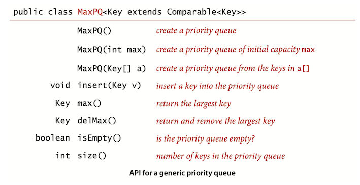
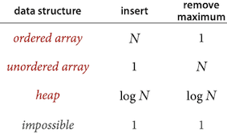
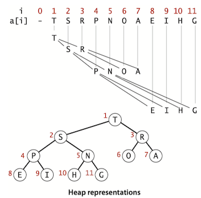
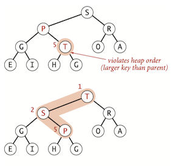
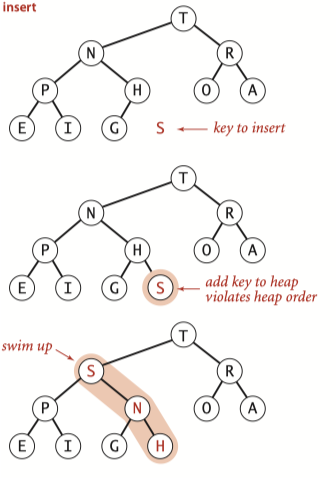
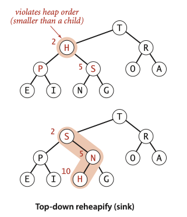
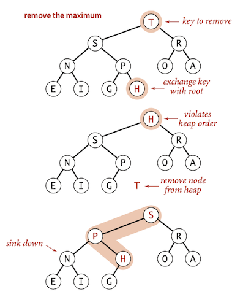
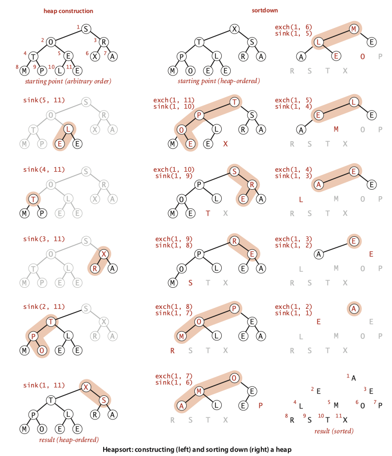

Topic 4: Priority Queues¶
1 Priority Queue¶
A priority queue is an abstract data type which is like a regular queue or stack data structure, but where additionally each element has a "priority" associated with it. It basically supports two operations: remove the maximum and insert.

Question
Q: The purpose of Binary Heap: Why exactly don’t we just sort and then consider the items in increasing order in the sorted array?
- In some data-processing examples such as TopM and Multiway, the total amount of data is far too large to consider sorting (or even storing in memory).
- In other examples, all the data does not even exist together at any point in time.
Elementary implementations¶
Perhaps the simplest priority-queue implementation is based on pushdown stacks. The code for
click here
public class UnorderedMaxPQ<Key extends Comparable<Key>> { private Key[] pq; // pq[i] = ith element on pq private int N; // number of elements on pq @SuppressWarnings("unchecked") public UnorderedMaxPQ(int capacity) { pq = (Key[]) new Comparable[capacity]; } public boolean isEmpty() { return N == 0; } public void insert(Key x) { pq[N++] = x; } public Key delMax() { int max = 0; for (int i = 1; i < N; i++) if (less(max, i)) max = i; exch(max, N - 1); Key max_element = pq[--N]; pq[N] = null; //null out entry, to prevent loitering return max_element; } private void exch(int i, int j) { Key swap = pq[i]; pq[i] = pq[j]; pq[j] = swap; } private boolean less(int i, int j) { return pq[i].compareTo(pq[j]) < 0; } }
Another approach for
Analysis¶
Order of growth of worst-case running time for priority-queue implementations：

2 Binary Heap¶
A binary tree is heap-ordered if the key in each node is larger than or equal to the keys in that node’s two children (if any).
A binary heap is a collection of keys arranged in a complete heap-ordered binary tree, represented in level order in an array (not using the first entry).

- In a heap, the parent of the node in position k is in position ⎣k/2⎦ and, conversely, the two children of the node in position k are in positions 2k and 2k + 1.
- we can travel up and down by doing simple arithmetic on array indices: to move up the tree from a[k] we set k to k/2; to move down the tree we set k to 2k or 2k+1.
- The height of a complete binary tree of size N is ⎣ \lg N ⎦ .
Question
Q. Why not use a[0] in the heap representation?
A. Doing so simplifies the arithmetic a bit.
Promotion in a heap¶
Scenario: Child's key becomes larger key than its parent's key.

To eliminate the violation:
- Exchange key in child with key in parent.
- Repeat until heap order restored.
private void swim(int k) { while (k > 1 && less(k / 2, k)) { exch(k / 2, k); k = k / 2; } }
Insertion in a heap¶
- Insert: Add node at end, then swim it up.
- Cost: At most 1 + \lg N compares.

public void insert(Key v) { pq[++N] = v; swim(N); }
Demotion in a heap¶
Scenario: Parent's key becomes smaller than one (or both) of its children's.
To eliminate the violation:
- Exchange key in parent with key in larger child.
- Repeat until heap order restored.

private void sink(int k) { while (2*k <= N) { int j = 2*k; if (j < N && less(j, j+1)) j++; if (!less(k, j)) break; exch(k, j); k = j; } }
Delete the maximum in a heap¶
- Delete max. Exchange root with node at end, then sink it down.
- Cost. At most 2 \lg N compares.
public Key delMax() { Key max = pq[1]; exch(1, N--); sink(1); pq[N + 1] = null; return max; }

Click Here
public class MaxPQ<Key extends Comparable<Key>> { private Key[] pq; // pq[i] = ith element on pq private int N; // number of elements on pq @SuppressWarnings("unchecked") public MaxPQ(int capacity) { pq = (Key[]) new Comparable[capacity + 1]; } public void insert(Key v) { pq[++N] = v; swim(N); } public Key delMax() { Key max = pq[1]; exch(1, N--); sink(1); pq[N + 1] = null; return max; } public boolean isEmpty() { return N == 0; } private void swim(int k) { while (k > 1 && less(k / 2, k)) { exch(k / 2, k); k = k / 2; } } private void sink(int k) { while (2 * k <= N) { int j = 2 * k; if (j < N && less(j, j + 1)) j++; if (!less(k, j)) break; exch(k, j); k = j; } } private void exch(int i, int j) { Key swap = pq[i]; pq[i] = pq[j]; pq[j] = swap; } private boolean less(int i, int j) { return pq[i].compareTo(pq[j]) < 0; } }
3 Heap Sort¶
Heapsort use any heap-based priority queue as the basis for a sorting algorithm by inserting a sequence of items, then successively removing the smallest to get them out.
Heapsort breaks into two phases:
heap construction : reorganize the original array into a heap.sortdown : pull the items out of the heap in decreasing order to build the sorted result.

Heap construction¶
Build heap using bottom-up method:
- proceed from bottom to top, using
sink() to make subheaps. - The scan starts halfway, and ends at position 1.
int N = a.length; for (int k = N/2; k >= 1; k--) sink(a, k, N);
Sortdown¶
Sortdown: repeatedly delete the largest remaining item.
- Remove the maximum, one at a time.
- Leave in array, instead of nulling out.
while (N > 1) { exch(a,1, N--); sink(a, 1, N); }
Analysis¶
- Heap construction uses \le 2 N compares and exchanges.
- Heapsort uses \le 2 N \lg N compares and exchanges.
Heapsort is optimal for both time and space, but:
- Inner loop longer than quicksort’s.
- Makes poor use of cache memory.
- Not stable.